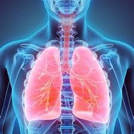

Science
 Have you ever tried controlling your breath for some time? How long does it take for you to hold your breath? How long does it take you to live without oxygen? Without food? Without water? The shortest time you can live without these is without air.
How important is air to us?
Why do we need oxygen?
1.1 The Respiratory System
1.1.1 Respiration in Some Animals
The respiratory system is found to be of four kinds in animals. They are earthworms' moist skins, fishes' gills, insects' trachae, and land animals' lungs. As blood comes in contact with the moist walls of these systems, CO2 is given off and O2 is taken in. The smallest tube, the bronchioles, lead to the air sacs or alveoli. The walls of the alveoli are thin and moist. This is where the gaseous exchange takes place.
| Animal Classification | Respiratory System |
|---|---|
| One-celled Animals, Sponges, Worms | Cell Wall |
| Annelids, Earthworms | Moist Skin |
| Water Animals, Fishes | Gills |
| Insects | Finely Branched Tracheal Tubes |
| Spiders | Trachea, Book Lungs |
| Echinoderms, Starfish | Soft Skin Gills, Dermal Branch |
| Brittle Stars | Respiratory Tree |
| Sea Cucumber | Walls of Rings of Puches Around Their Mouth |
| Mollusks | Mantle, Tissue Layer Covering the Organs |
| Vertebrates | Skin, Gills, or Lungs |